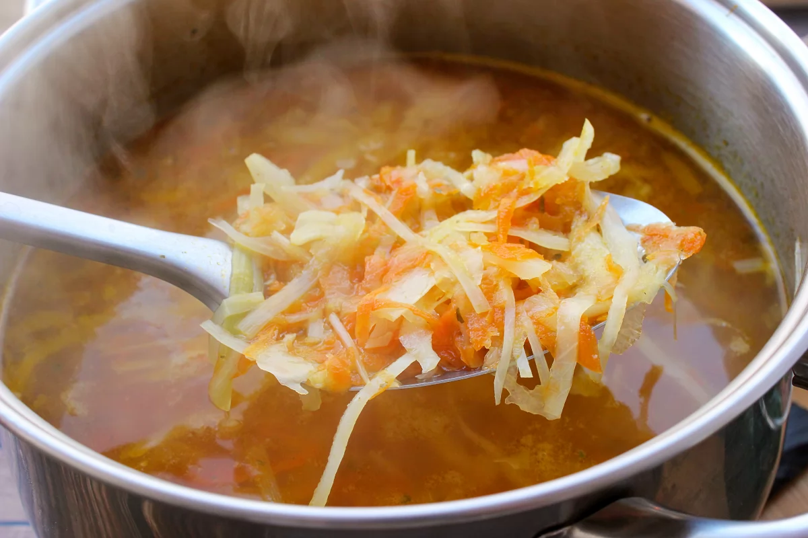

RECETARIO
joseluis
Sopa juliana (6 personas)
Ingredientes
1 Kg. de cebollas.
1 Kg. de zanahorias
500 gr. de patatas.
100 gr. de apio.
3 l. de caldo de carne.
150 gr. de mantequilla
1 cucharada de harina.
1 pizca de sal.
Tomillo.
1 hoja de laurel.
Pimienta.
1 diente de ajo
Proceso
Pelar y partir las verduras en juliana.
Rehogarlas con la mantequilla, sal y pimienta a fuego lento hasta que estén transparentes sin dorarse.
Añadir la harina sin dejar de remover.
Ponerlo en una cazuela con el caldo, el tomillo y el laurel.
Dejar cocer a fuego lento durante unos 15 minutos.

Dejar reposar y enfriar.